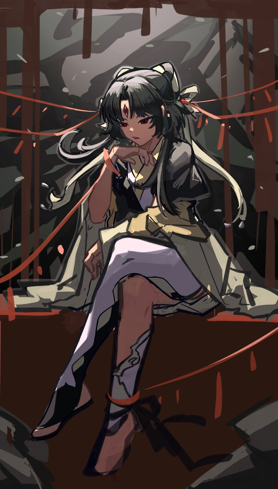

Welcome to kqlqkqlqF’s Site!! Pls enjoy! XD
Welcome to kqlqkqlqF’s Site!
This is the homepage of kqlqkqlqF’s website. Feel free to explore and enjoy!
About Me
I am kqlqkqlqF, and I created this website to share my interests and projects…No!!!! I won’t write anything as boring as this on my bio! Lets just start again!
:) Hey there, I’m Yiyi Feng, but you might know me better by my online alias, “kqlq.” Think of me as your friendly neighborhood science enthusiast with a knack for creating chaos… I mean, innovative solutions in the lab!
Currently, I’m on a wild adventure pursuing a Bachelor of Science degree at the University of Toronto. My curriculum? Oh, just your usual mix of Genome Biology, Statistics, and Cell & Molecular Biology. No biggie, right?
Despite my love for all things nerdy, I’m not your typical science geek. Sure, I can crunch numbers and dissect DNA like a pro, but I also moonlight as a mixologist at a cyber bar. Yep, you heard that right – I’m the master of mixing drinks and breaking code simultaneously!
When I’m not busy brewing up experiments in the lab or slinging cocktails behind the bar, you can find me unleashing my creative side. From whipping up digital masterpieces on Procreate to producing hilarious videos on iMovie, I’m a jack-of-all-trades when it comes to creative pursuits.
But wait, there’s more! I’m also a self-taught economics guru, a master chef in the making (just ask my latest kitchen experiments), and a budding polyglot dabbling in Japanese. Oh, and did I mention I once won an award for designing a quirky picture book? Yeah, I’m kind of a big deal.
In a nutshell, I’m just your average science nerd with a quirky sense of humor and an insatiable thirst for knowledge. So, buckle up and join me on this crazy ride called life – it’s bound to be one heck of an adventure!
Video Project :
This is my drawing video from BILIBILI! TBH I made this video 2 years ago and I can definately see how bad its quality was now….
Git Project : https://github.com/kqlqkqlqF
This is my github main page!
My Drawings
Here are some of my drawings:



My CV
Here is my CV!